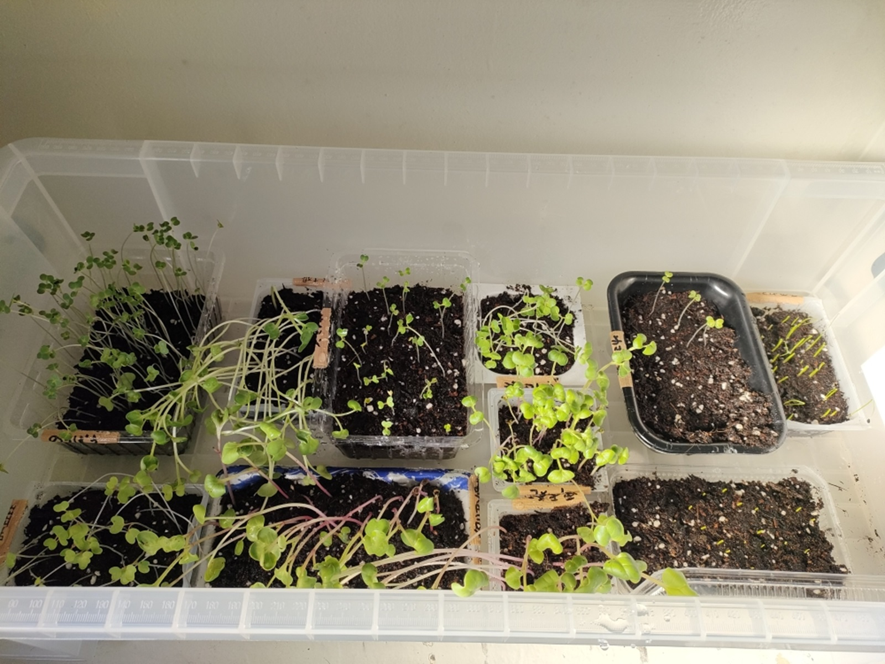
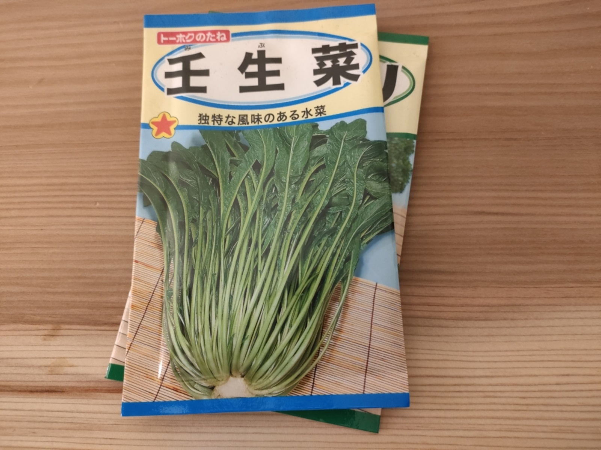

0012 発芽、ふた葉、みつ葉

こんにちは、hanaponです。
野菜からのタネの採取を継続しつつ、種やさんからも購入して、タネをまきました（サムネイル写真参照↑）。
その後、１週間ほど経った状況がこちら↓。（上の写真と配置は異なります）

1種類は全く発芽しないものの、その他のタネの皆さんは発芽、ふた葉、三つ葉へと成長されております。
植え替えを催促されている方もおいでになるため（笑）、準備中です。
根元へ突き進むもの、天へ向かうものなどさまざまです。
限られたスペースでのベランダ菜園はコンパクトさが求められることから、各々の実りに合わせた容器なり袋などで対応していく予定です。
-*-*-*
最近はポタリングでホームセンターやスーパーなどを発見すると、タネ売り場を探すようになってきました。見つかるとウキウキテンションに（笑）。
今は秋まきのタネが並んでいます。
以前食して止まらなかった、壬生菜（みぶな）のタネを発見したり↓、アーフタヌーンティー（笑）に合いそうなハーブのタネを見つけたり。

ベランダではありますが、自身で季節の野菜を収穫して実感できると良いです。
「今までの生活とは異なる方へ」を合言葉に、新たな日常生活を開拓していきます。